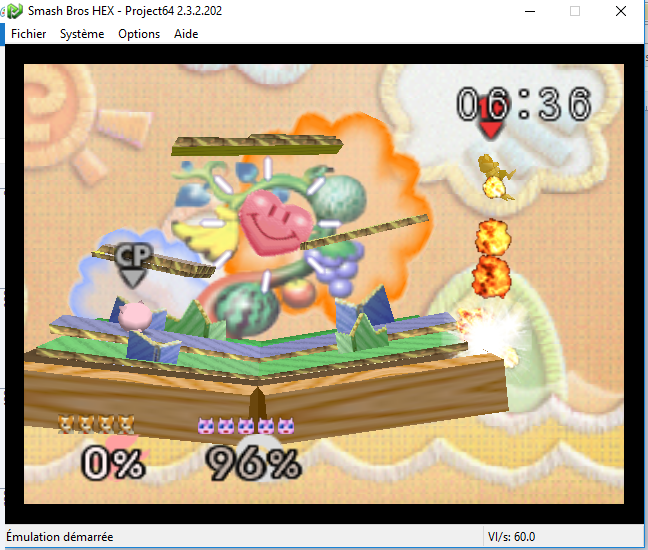

<!DOCTYPE html>
<html>
<head>
  <meta charset="UTF-8">
  <meta name="viewport" content="width=device-width, initial-scale=1.0">
  <link rel="stylesheet" href="../../../css/style.css">
  <title>ZAAQ</title>
  <link rel="icon" href="../../../img/icon.ico" type="image/x-icon">
</head>
<div class="sun">
  
</div>
	
	
</html>


<body>
  <div class="wrapper">
    <header>
      <div class="banner">
        
        <a href="https://www.zaaq.fr">Accueil</a>
            <a href="../../../../ressources/pages/external.html">Sites</a>    
             
            <a href="../../../../ressources/pages/ssb.html">Smash</a>     
            <a href="../../../../ressources/pages/contact.html">Contact</a>

      </div>
    </header>

    <div class="container">
      

      <section>
        
	  <p> smash bros possède pleins d'attaques différentes déjà l'attaque est différebte en fonction de l'orientation du joystic voici un résumé (chaqune varie entre les personnages)<p/>
		<p>UpB         | Haut + B  |  Permet généralement de revenir su le terrain</p>
		<p>DownB       | Bas  + B  | une attaque spéciale</p>
		<p>Back Throw  | Grab (R) + Joystick dans la direction opposé | envoie votre adversaire derière </p>
		<p>ce sont les plus utiles </p>
		<div class="ssb64o">
		<h1></h1>
		</div>

		<p>Fox (1P) Uttilise son UpB pour se propulser en l'air
	  <p><a href="index.html">Menu</a></p>


      </section>
    </div>

    <footer>
      <p>© 2023 - ZAAQ - ArthurM</p>
    </footer>
  </div>
  <script src="script.js"></script>

</body>
</html>

